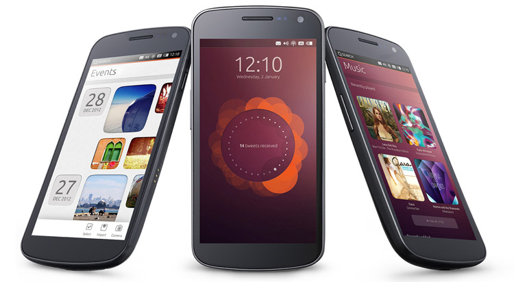

Egy londoni eseményen mutatta be az Ubuntu telefonos kiadását a Canonical. Az operációs rendszer a jövő heti Consumer Electronics Show-n is látható lesz, oda azért viszik el, hogy minél több mobilgyártót meg tudjanak nyerni mellé.
A telefonos Ubuntu alapját ugyanaz adja, ami az asztali vagy szerveres változatét, erre kerül rá az érintésre optimalizált kezelőfelület. A bemutatón látottak alapján az ubuntus okostelefonoknak nem "lock", hanem "welcome" képernyője van, itt tekinthetők meg az értesítések, például a beérkezett üzenetek vagy elmulasztott hívások.
A projekt weboldala szerint a telefonos Ubuntu hardverkövetelménye legalább 1 GHz-es ARM Cortex-A9 processzor, 512-1024 megabájt RAM és 4-8 gigabájt flash háttértár, a desktop mód azonban csak a high-end modelleken működik majd, amelyek négymagos ARM vagy Intel Atom processzorral, legalább 1 gigabájt memóriával és 32 gigabájt háttértárral rendelkeznek. A desktop mód nem más, mint egy desktop Ubuntu környezet az abban megszokott alkalmazásokkal, amely egérrel és billentyűzettel irányítható, persze ehhez érdemes a telefont egy nagyobb kijelzőhöz kapcsolni, például HDMI segítségével.
A Canonical vezetői szerint a telefonos Ubuntu fejlesztése 2013 végére vagy 2014 elejére hozhatja meg első gyümölcsét, ekkora kerülhetnek a piacra az első készülékek az operációs rendszerrel - hogy mely gyártók állnak a kezdeményezés mögé, egyelőre nem tudni. Ezt azonban még meg fogja előzni a tavalyi CES-en bemutatott Ubuntu for Android érkezése, amely egy Ubuntu desktoppal vértezi fel az Androidot, így az például egy dokkolóba állítva ugyanúgy használható egérrel és billentyűzettel mint egy asztali vagy mobil PC.